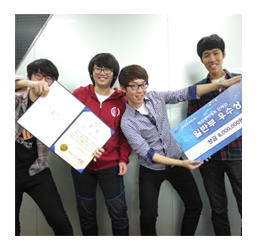
2013년 9월
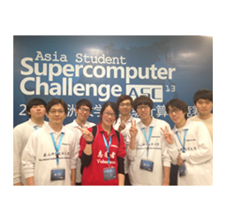
2013년 4월
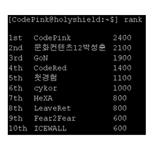
2013년 11월
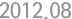
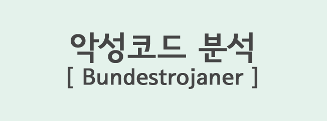
이런 도구가 사용되었습니다
- Sysinternals Autoruns, Regshot, Process Explorer, Process Monitor, CaptureBat, Wireshark
이렇게 둘러 보실 수 있습니다
- 분석글 : https://carpedm20.blogspot.kr/2012/08/bundestrojaner.html
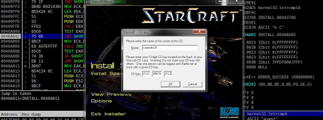
이런 도구가 사용되었습니다
- ollydbg : 스타크래프트 설치 바이너리 리버싱
이렇게 둘러 보실 수 있습니다
- 분석글 : https://carpedm20.blogspot.kr/2012/08/blog-post_7630.html
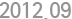
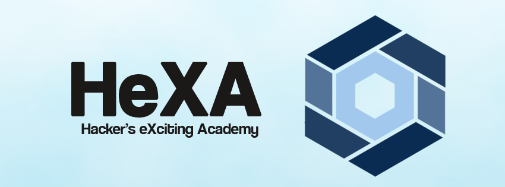
이렇게 시작하게 되었습니다
- 하데스(드라마 '유령'의 해커)가 너무나도 멋있어 보였습니다
- 컴퓨터 공학부 학생이라면 해킹 정도는 배워야 된다고 생각했습니다
이러한 활동을 했습니다
- 2012.09 HeXA 로고 디자인
- 2012.11 재학생 대상 제 1회 c++ 공개 강의
- 2012.12 UNIST 출석체크 시스템 취약점 발견 및 보고
- 2013.09 제 1회 HeXA CTF 1위
- 2013.09 UNIST 재학생 대상 제 1회 C++ 튜터링
- 2013.09 UNIST 대한민국 화이트햇 콘테스트 단체전 3위
이렇게 둘러 보실 수 있습니다
- 웹 사이트 : https://hexa.us.to
- Facebook : https://www.facebook.com/unist.hexa
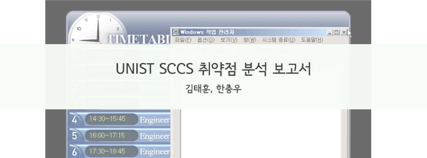
이렇게 시작하게 되었습니다
- 전자 출결 기계에서 윈도우 오류창이 떠있는것을 보았습니다
- 전자 출결 기계에 동아리 로고를 띄우고 싶었습니다
이런 도구와 취약점이 사용되었습니다
- Metasploit : windows xp의 유명한 취약점 MS08-067을 이용해 remote shell을 얻음
- ollydbg : 추출한 출결 프로그램을 리버싱
이렇게 세상이 변했습니다
- 학교 DB의 계정을 얻어 데이터 조작이 가능했습니다
- 교내 정보서비스팀에게 알리고, 피자를 먹을 수 있었습니다
이렇게 둘러 보실 수 있습니다
- 보고서 : 다운로드
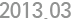
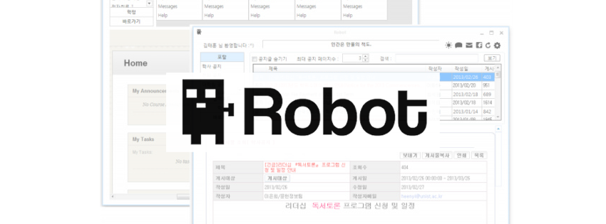
이렇게 만들게 되었습니다
- UNIST 학사 공지들은 UNIST 포탈 사이트에 올라옵니다
- 물론 학생들은 귀찮아서 포탈에 잘 접속하지 않습니다
- 학생들(저를 포함)은 중요한 공지(기숙사비 납부, 주요 행사, 유용한 정보)들을 놓치기 쉽습니다
이런 도구와 언어가 사용되었습니다
- Paros : 포탈, 기숙사, 도서관 공지사항을 불러올 때 사용되는 url query의 정보를 얻습니다
- C# : 학생들이 직관적으로 사용할 수 있도록 GUI Application을 만듭니다
이렇게 세상이 변했습니다
- 학생들은 포탈에 로그인 하지않고 포탈, 기숙사, 도서관, 수업 공지를 볼 수 있습니다
- 여름방학 1주일간 밥먹고 이것만 만들었기 때문에 코딩 마라톤에는 자신이 생겼습니다
- 배포한 직후 학교에서는 홈페이지 리뉴얼을 시작했습니다
- 몇몇 query들이 작동하지 않아 이용자 수가 줄어들었고, 결국 프로젝트는 종료되었습니다
이렇게 둘러 보실 수 있습니다
- 소스코드 : https://github.com/carpedm20/UNIST-robot
- 프로그램 소개글 : https://carpedm20.blogspot.kr/2013/03/robot.html
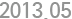
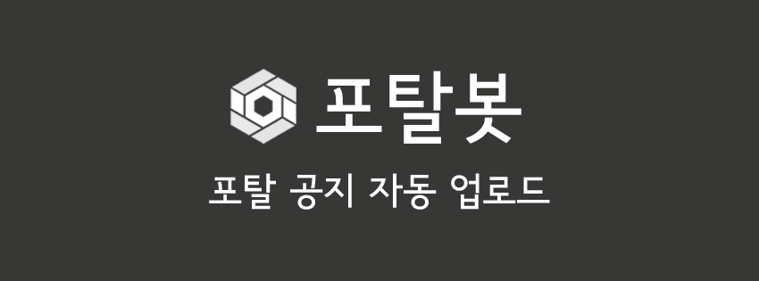
이렇게 만들게 되었습니다
- UNIST 로봇이 망했습니다
이런 도구와 언어가 사용되었습니다
- Paros : 포탈, 기숙사, 도서관 공지사항을 불러올 때 사용되는 url query의 정보를 얻습니다
- python : 학생들이 Facebook을 통해 정보를 얻을 수 있도록 봇을 만듭니다
이렇게 세상이 변했습니다
- 학생들은 포탈에 로그인 하지않고 포탈 공지를 볼 수 있습니다
- UNIST 로봇의 실수를 만회했습니다
- 포탈봇은 12월 7일 현재 친구가 640명이나 생겼습니다
이렇게 둘러 보실 수 있습니다
- 소스코드 : https://github.com/carpedm20/UNIST-portal-bot
- 포탈봇 : https://www.facebook.com/hexa.portal
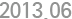
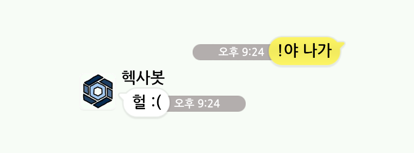
이렇게 만들게 되었습니다
- 원배봇이라는 카카오톡 봇을 보고 신기했습니다 - 카카오톡으로 (여자)친구를 만들고 싶었습니다
이런 도구와 언어가 사용되었습니다
- .Net reflector : 초기버전 카카오톡 디컴파일
- apktool, dex2jar : 최신버전 카카오톡 디컴파일
- IL : C#의 컴파일된 언어. AES key를 고정시키기 위해 소스를 수정할때 사용
- python : 카카오톡 프로토콜 구현 및 헥사봇 알고리즘 구현
이렇게 세상이 변했습니다
- 모바일 어플리케이션 리버싱에 흥미를 갖게 되었습니다
- 카카오톡 프로토콜을 python 모듈로 구현해 배포했습니다
- (현재는 카카오톡 측의 요청으로 중단됨)
이렇게 둘러 보실 수 있습니다
- 소스코드 : https://github.com/namongk/kakaotalk
- 헥사봇 : https://carpedm20.blogspot.kr/2013/08/blog-post.html
- 카카오톡으로 여친 만들기 : https://www.dropbox.com/s/kxwrs7ah8phkfln/kakao.pdf
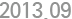
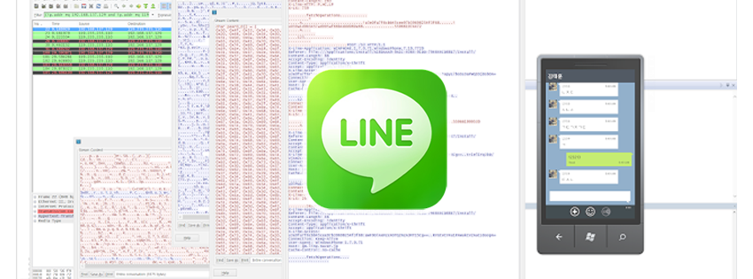
이렇게 시작하게 되었습니다
- 한국 시장 밖에서는 LINE이 카카오톡을 제쳤다는 기사를 봤습니다 - LINE으로 (여자)친구를 만들고 싶었습니다
이런 도구와 언어가 사용되었습니다
- .Net reflector : 초기버전 LINE 디컴파일
- IL : C#의 컴파일된 언어. HTTPS 통신을 HTTP 통신으로 고정시키기 위해 사용
- python : LINE 프로토콜 구현
이렇게 세상이 변했습니다
- 모바일 어플리케이션 리버싱에 더더욱 흥미가 생겼습니다
- LINE 어플리케이션 분석 과정을 블로그에 공유했습니다
- LINE 보안실을 맡고 계신 분께서 연락을 주셨습니다
이렇게 둘러 보실 수 있습니다
- 분석글 : https://carpedm20.blogspot.kr/2013/09/line-reverse-engineering.html
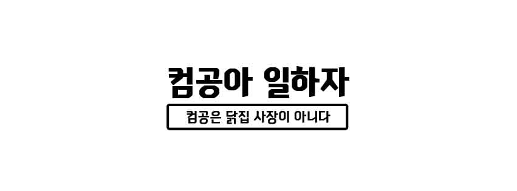
이렇게 시작하게 되었습니다
- 타대학교 취업 게시판에서 인턴쉽과 신입 채용 정보를 '가끔' 확인했습니다 - 제출 마감이 아깝게 지나간 채용 정보를 보면서 아쉬움을 느꼈습니다
이런 도구와 언어가 사용되었습니다
- Paros : 타대학교 취업 게시판의 url query들을 수집
- python : 새로 올라온 채용 정보를 자동으로 Facebook 페이지에 업로드
이렇게 세상이 변했습니다
- 학생들이(저를 포함) 채용 정보를 확인하기위해 매번 게시판에 들어갈 필요가 없습니다
이렇게 둘러 보실 수 있습니다
- 소스 코드 : https://github.com/carpedm20/comgong-job
- 컴공아 일하자 : https://www.facebook.com/comgong.job
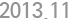
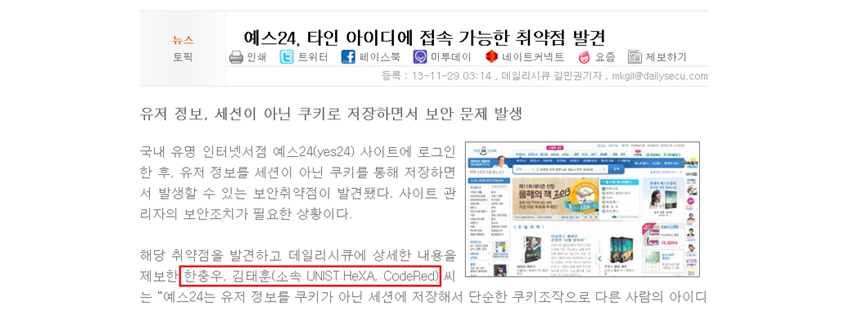
이렇게 시작하게 되었습니다
- yes24에서 '대학생 모여라 스키장가자' 이벤트를 보게되었습니다 - 2등을 하면 50만원 외식상품권을 얻을 수 있었습니다
이렇게 둘러 보실 수 있습니다
- 관련 기사 : https://dailysecu.com/news_view.php?article_id=5781